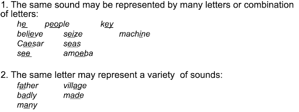
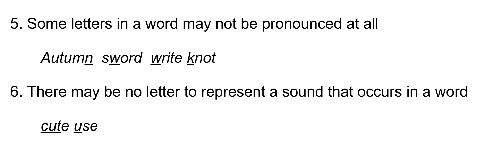
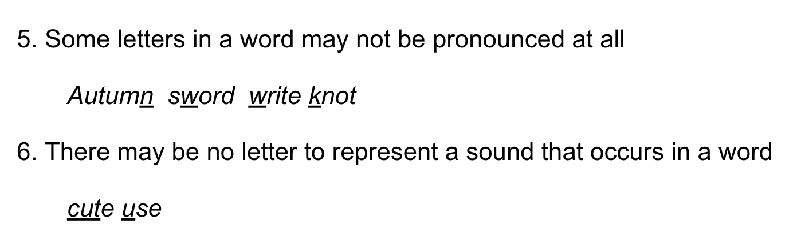

Make this Notebook Trusted to load map: File -> Trust Notebook
Week 3 語音的世界 (1)
謝舒凱 台大語言所
2023-03-12
今天的主題
上次的題目討論
語音學入門
聲音與語言
聲音三要素
Sound is a physical phenomenon that can be described in terms of three properties 物理上來說：
- 音量 (大小) loudness 《》 振幅大小
- 音調 (高低) pitch 《》振動頻率高低
- 音色 (差異) quality 《》許多正弦波疊合而成的複雜波形
聲音無所不在
語音（聲音）是什麼？
Speech Sounds
- 聲音是一種(縱)波：聲帶震動發出聲響，發音位置修飾在口／鼻腔產生共鳴，以空氣為介質，以波的形式傳遞，在耳中的鼓膜震動，訊號傳入大腦解析。
Speech Sounds: Phonemes
音位（英語：Phoneme），又譯音素，是人類語言中能夠區別意義的最小聲音單位。傳統上用 Minimal pair (最小音對) 方法來辨認。
人類語言中平均的音素數目（大約）是 30（ranging from 141 phonemes in
!Xūto 11 phonemes inPirahā）
Speech Sounds: Some (Interesting) Facts
- Vowelless word/sentence in Bella coola (
Nuxalk): 聽看看

Speech Sounds: Applications
語音辨識 Speech-to-Text
語音合成 Text-to-Speech
多模態 AI 的時代，Speech 可以跟 XXX (melody, emoji, …) 各種互動轉換
Linguistic approach
語音學 (Phonetics)
- 發音學 (Articulatory Phonetics)
- 語音聲學 (Acoustic Phonetics)
- 語音聽覺學 (Auditory Phonetics)
音韻學 (Phonology)
聲與音的詞彙語意差異，已經透漏了古人的語音學觀念。
Sound Segments
- Knowing a language includes knowing the sounds of that language
- Phonetics is the study of speech sounds
- We are able to segment a continuous stream of speech into distinct parts and recognize the parts in other words
Identity of Speech Sounds
Our linguistic knowledge allows us to ignore nonlinguistic differences in speech (such as individual pitch levels, rates of speed, coughs)
We are capable of making sounds that are not speech sounds in English (but are in other languages)
- The click tsk that signals disapproval in English is a speech sound in languages such as Zulu.
Identity of Speech Sounds
The science of phonetics aims to describe all the sounds of all the world’s languages
- Acoustic phonetics: focuses on the physical properties of the sounds of language
- Auditory phonetics: focuses on how listeners perceive the sounds of language
- Articulatory phonetics: focuses on how the vocal tract produces the sounds of language
圖示

Representing Sounds
怎麼（科學的）描述/表示/轉寫語音？
- Spelling, or orthography, does not consistently represent the sounds of language. Why?
Some Problems
Some Problems
 

The Phonetic Alphabet (IPA)
In 1888 the International Phonetic Alphabet (IPA) was invented in order to have a system in which there was a one-to-one correspondence between each sound in language and each phonetic symbol
Someone who knows the IPA knows (basically) how to pronounce any word in any language
Practice with IPA (值得的投資)
Mimic method 用英文來想像發音的位置
照表發音 是推薦的學習法，但是要先學會表格的意義
如果妳對發音生理也有興趣，可以參考 Articulatory information with ULTRASOUND-enhanced videos and animations
In-class Exercise [1]: German
In-class Exercise [2]: Korean
從微量數據先來試著推敲韓語的發音

語言系譜資料
世界語言結構地圖集 (WALS) 涵蓋 2662 種語言、192 種結構特徵
lingtypology(Python與R皆有套件)
子音數目分佈
母音數目分佈
Make this Notebook Trusted to load map: File -> Trust Notebook
如何紀錄與分析語音
辨音能力 ([挑戰]: IOL 2016 team contest)
語音轉寫架構與工具
語音參考資料庫與參考語法
文化人類知識背景
語音轉寫與挑戰
以布農語爲例

辨音練習
- 以團體討論方式，來練習 Turkish Bird Languages (kuş dili) 的辨音能力。（請關掉電腦，只用耳朵）
Turkish bird language is a whistled register of Turkish, which is currently used by around 10,000 people in the mountainous regions of Turkey. 介紹
本週作業在 NTU COOL 上，請同時做兩件事：
- 瞭解
IPA。 - 安裝
Praat軟體。